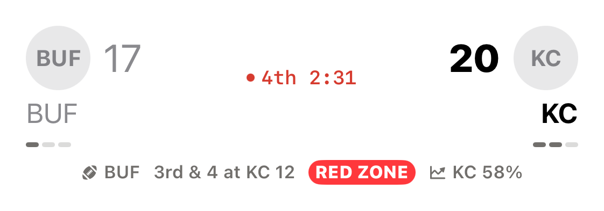
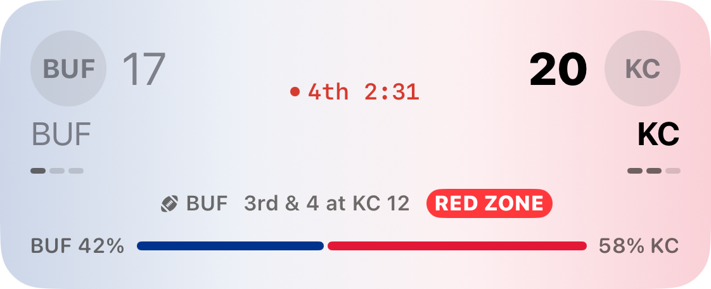
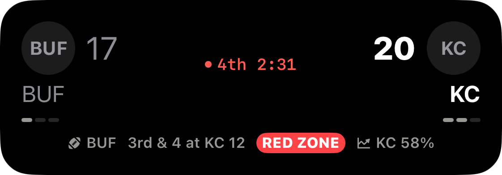
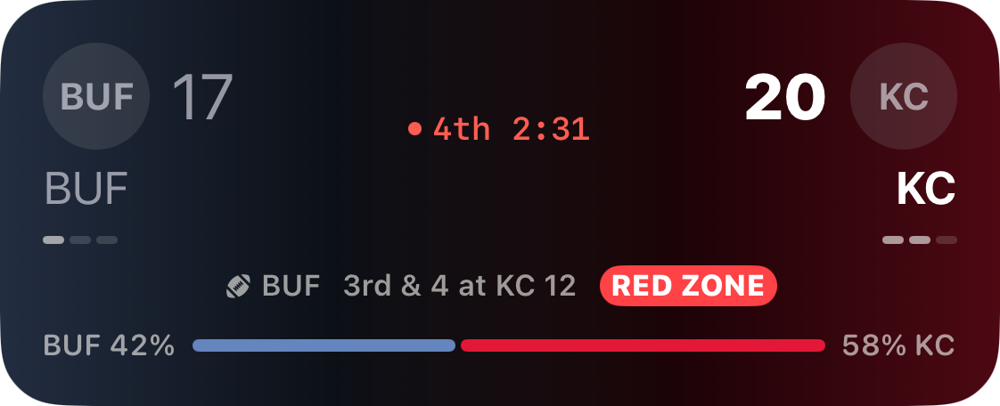
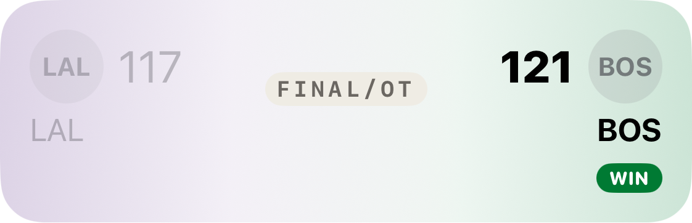
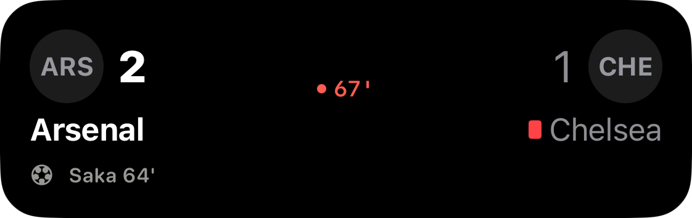
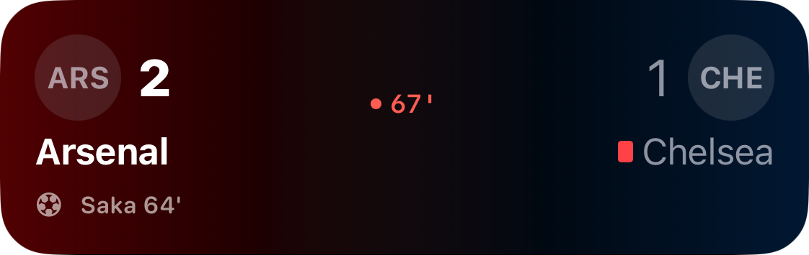
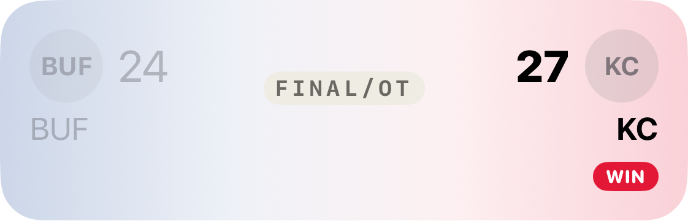
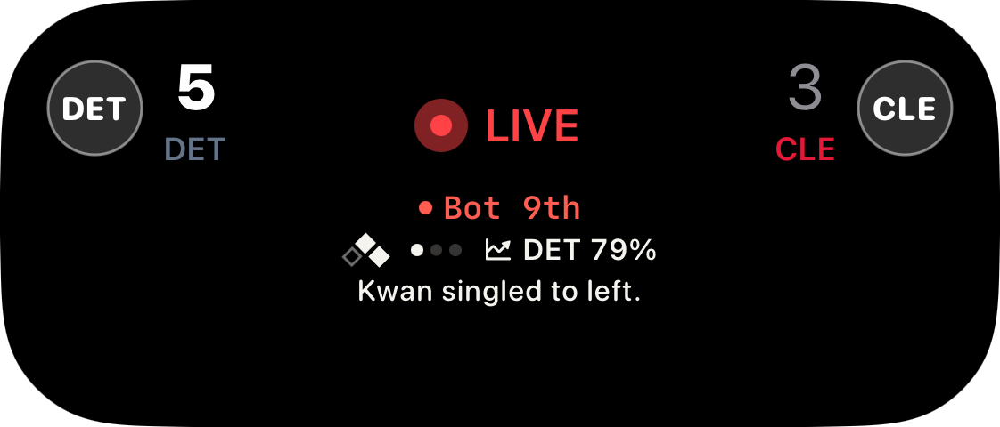

Live Activity colour: before / after
Xcode preview renders. "Before" is the gallery captured earlier today (commit df54c46); "after" is commit d2e6fd0 plus the playground. To try it on a phone, go to Settings → Developer → Live Activity Playground. Pick a game, start it, then score, swing the win probability, and go to halftime or final. Turn Team colours off and restart to see the old look.
Lock Screen · NFL, light
Bills-to-Chiefs colour wash, and a two-colour win-probability bar in place of the "KC 58%" text.


Lock Screen · NFL, dark
In dark mode the wash is stronger. Dark team colours are lightened so they still show against black.


Lock Screen · Soccer
Arsenal red into Chelsea blue. Soccer keeps home on the left.




Final
The winner gets a WIN badge in its team colour and the loser fades to half strength. The before shot is the NBA final; the after uses a new NFL final preview, because the NBA preview wouldn't render.


Dynamic Island · expanded (MLB)
Team codes in their colours. Detroit's navy is lightened so it reads on black.


Only on a device (use the playground)
- Rolling scores: tap "+ KC" and the number rolls up. Previews are still images, so this can't show here.
- Island ring: the coloured outline around the Dynamic Island follows the leading team, and goes back to your theme colour when the game is tied.
- Compact dot: a small dot in the leader's colour before its code ("● KC 20-17"), with no dot when tied.